1.Macher Jhol(Fish curry)
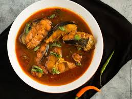There is no doubt that both rice and fish are the staple Kolkata cuisines. Every restaurant with a Bengali food menu has the famous Macher Jhol. While this traditional dish is a spicy fish curry made along with potatoes & tomatoes, and usually seasoned with turmeric, garlic, onions & grated ginger, it is best relished with rice. If you’re a seafood lover, make sure this is on the top of your list.
2.Kolkata Biriyani

Inspired by the Awadhi style, the Kolkata Biryani is a heart winner! It’s captivating aroma and the finely flavoured rice with potato cooked in rich spices is served hot with juicy mutton or chicken, which makes it a must-have when you’re in the city. If you’re not an experimental kind of a foodie, and wish to bet safe, rest assured and order this one from the menu.
3.Kosha Mangsho(Mutton curry)
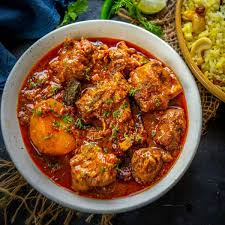One of the famous Bengali food recipes, Kosha Mangsho is a curry cooked with mutton, a variety of vegetables like tomatoes and onions, and topped with a lot of different spices. It’s dense brown color adds on to the feel, and there is no denying that it tastes like heaven, especially if one is a meat lover. To make the most out of it, you can savour it with steamed rice, luchis, or paranthas.
4.Alur Torkari with Luchi
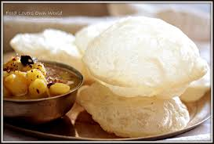While it may come across as our usual aloo poori from the North India, know that it is not. With potatoes cooked in a thick tomato gravy, this scrumptious curry is the safest Kolkata food to try in the city. Served mostly with breads like luchi or chapati, it is an ideal toothsome snack to have for breakfast.
5.Shukto
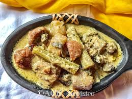Counted as one of the best Bengali vegetarian recipes, Shukto is a traditional cuisine that consists of a variety of vegetables like potato, pumpkin, bottle gourd, bitter gourd, and more. Its partly bitter and partly sweet taste makes it a unique concoction, which can be had along with rice or a traditional flat bread.
6.Chelo Kebab
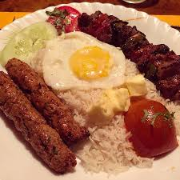If you’re a hardcore chicken lover, this platter of mutton seekhs and chicken kebabs is one thing you must definitely try in Kolkata. Served along with steamed rice and veggies, it is an exceptionally lip-smacking cuisine and can be enjoyed both as a starter or in the main course.
Streetside Specialities
7.Fuchka
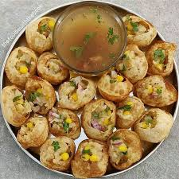Also known as gol gappas and paani puri, these tiny water-bombs with spicy masala and meethi chutney are one of the best things to have in the streets of Kolkata. While they look light, they are quite filling and toothsome, and that is exactly the reason why you just can’t stop at one.
8.Tele Bhaja
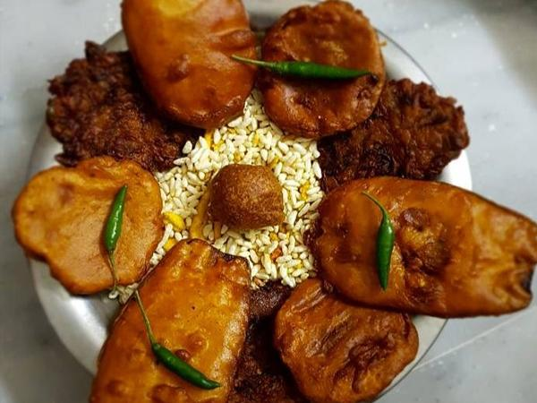A famous snack in the city that continues to successfully retain the essence of Bengali cuisine, Telebhaja are best enjoyed in monsoons with a cup of tea. From beguni and phuluri to peyaji and alur chop, these crunchy snacks covered in besan (corn-flour) have something for everyone’s taste buds.
9.Kathi Rolls

Unlike any other ordinary roll, the Kathi Rolls in this city are exceptionally lip-smacking. Egg, mutton, chicken, or paneer, you just name your favorite and you’ll get it. They are mostly made like a flaky flour paratha, which is further rolled up with the chosen stuffing and is laced with irresistible sauces, spices, and veggies.
10.Jhalmuri
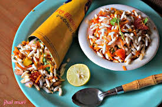Amongst the best street food in Kolkata, Jhalmuri is the most perfect snack that you can relish whilst exploring the streets. These look like puffed rice or muri and are mixed along with peanuts, coriander and other spices, which make it an appetizing quick bite.
Sweet Delicacies
11.Rasgullas

Popular across the states for being the best dessert in the city, Bengali rasgullas are like balls of cottage cheese and semolina dough, which are dipped in a sugary syrup to add sweetness to them. They are best had right after the main course, but it’s true that if you have been born with a sweet tooth, one just won’t be enough for you.
12.Sondesh
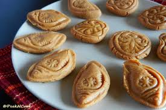Sandesh is a popular dessert in Kolkata, which is made from milk or cottage cheese and sugar, and is one of the most famous snacks that you would come across in the city. Molded into a variety of shapes like the little balls and circular discs, this doughy and buttery sweet dessert puts a perfect end to our any main course traditional Bengali cuisine.
13.Misti Doi
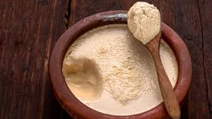Consisting of a fermented sweet yogurt, Mishti Doi is one of the area’s most famous culinary delight. While you can also buy packaged mishti doi in grocery stores in your own city today, the fresh ones from Kolkata’s legendary sweet shops is definitely worth trying at least once.
14.Patisapta
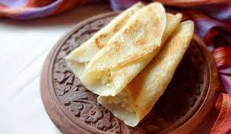This is quite a famous sweet delicacy which is a favorite for every Bengali out there. Patisapta is made during the ‘poush parbon’ along with other traditional sweet delicacies like Dudh-Puli, Malpua and Kolar Bora. Made of milk and refined flour, this is made in a round shape and stuffed with coconut, dry fruit and mawa and served like a roll.